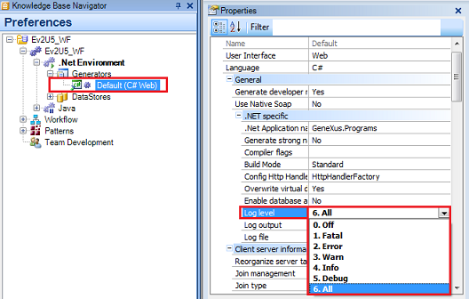

This document explains how to enable logging for Workflow Tables impact and reorganizations. Sometimes when we need to reorganize Workflow Tables or when we have to impact them, an error occurs showing no specific details. This may happen when a new Upgrade of GeneXus is installed. In such case, it is useful to enable the logging, and then look for errors in the .log file created, as follows: Enabling logging in GeneXus IDE (for GXflow impact)It is as simple as enabling the Generator's logging. The logging properties can be found under Preferences by clicking on the corresponding Generator node.  The properties to be set for the Generator are: NetSet the Generators 'Log level' property to value "All" (or any level desired) and execute the reorganization or impact. JavaSet property 'Log JDBC Activity' with value "Yes", and property "Detail" to the desired level, for example: "High", and then execute the reorganization or impact. Enabling logging in the Business Process DeployerTo do this we must run the Business Process Deployer as follows: NetFor example: GXBPDeployer -netlogfile "C:\deploy.log" -netloglevel 0 Where: netlogfile: defines the path to the JDBC log file. In the above example, all errors will be logged in the "C:\deploy.log" file. 0 - OFF JavaExecute 'GXBPDEployer.jar' using the following parameters, and use the deploy file created: java -jar GXBPDEployer.jar -jdbclogfile "C:\deploy.log" -jdbclogdetail 0 Where: jdblogfile: defines the path to the JDBC log file. In the example above, all errors will be logged in the "C:\deploy.log" file. 0 - HIGH |
| Backlinks | ||
| Business Process Deployer | Business Process Deployer (GeneXus 16 Upgrade 9 or prior) | HowTo: Enabling logging for workflow tables impact and reorganizations ( |